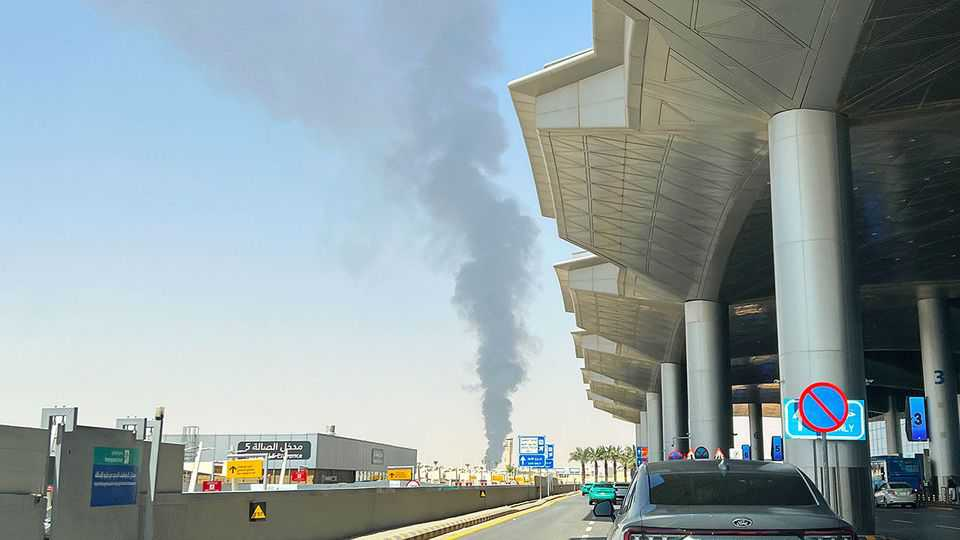
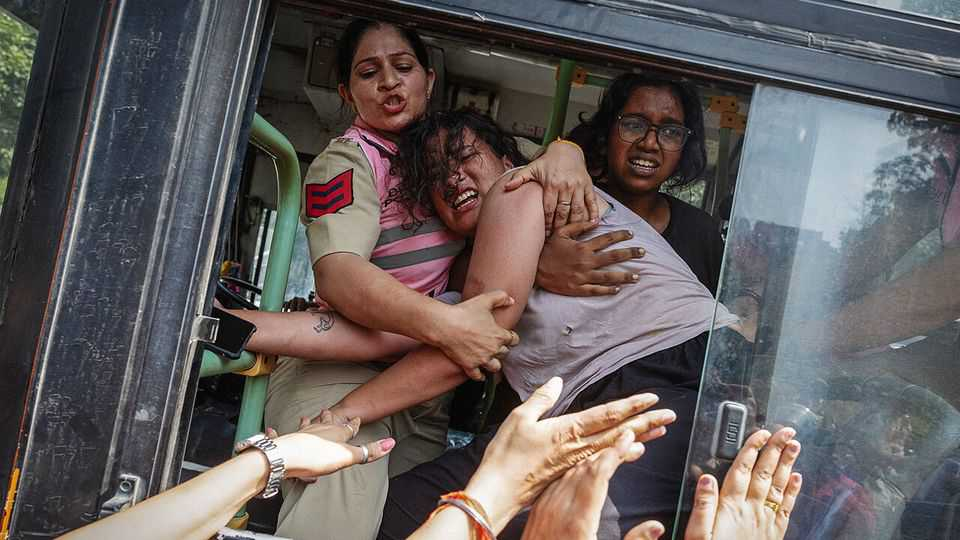

Politics

Oct 15th 2026
The Houthis, Yemeni rebels backed by Iran, carried out several strikes on Saudi Arabia. At least 17 people were killed and more than 300 were injured in the attacks on Saudi airports. Some of the casualties were pilgrims boarding a flight from Riyadh to Jeddah, the gateway to Islam’s holiest sites. The Houthis also attacked the headquarters of Saudi Aramco, the state oil firm. Donald Trump accused the rebels of “purposefully” trying to drive up oil prices ahead of America’s midterm elections.
A Singapore-flagged container ship sank after being struck by a missile while crossing the Strait of Hormuz. Attacks on vessels have become more frequent. There have been at least 23 since October 1st, six more than during the first two weeks of the war.
Joseph Kabila, a former president of the Democratic Republic of Congo, was named the leader of the FRN, a new rebel alliance that is fighting government forces in the east of the country. The commander of the M23, hitherto the primary rebel group, will join the FRN as a deputy. Mr Kabila, who was sentenced to death while in exile but returned to Congo last year, accuses the government of mismanaging the economy and disregarding the constitution.
Mr Trump’s agreement with Vladimir Putin through which Russia will supply diesel to America and global markets was roundly criticised, including by some Republicans. Mr Trump desperately wants diesel prices to fall ahead of the midterm elections, though observers think his deal will not have much of an effect. After Volodymyr Zelensky called it “a weak decision”, Mr Trump suggested Ukraine should “get a new leader”. A bipartisan group of senators questioned the legality of the deal, reminding Mr Trump that Congress banned Russian energy imports in 2022.
Russia resumed its bombardment of Ukrainian power infrastructure, hitting an energy plant near Kyiv. It also hit a block of flats. Mr Zelensky said Ukraine had received no warnings about some recent attacks and that he feared America had stopped sharing intelligence, which Mr Trump denied. Ukraine also reported that restrictions had been imposed on its use of Starlink, a satellite network that has become crucial to Ukrainian military operations.
Bulgaria’s prime minister, Rumen Radev, said Russia was probably responsible for destroying two cargo ships in the Black Sea; 11 sailors are missing after one of the ships sank. Russia has been trying to block exports of Ukrainian grain, and Ukraine has responded with drone attacks on Russia’s shadow fleet.
The British prime minister, Andy Burnham, claimed that a summit with the European Union on November 20th would be a springboard for a “serious dialogue” about future relations with the bloc. Mr Burnham seemed to cast doubt on the validity of the Brexit referendum of 2016 by asserting that Russia had interfered in it, but later told Parliament he hadn’t meant to suggest that Russian meddling had swung the vote. That was confirmed by the head of MI5, who said Russian online trolls had tried to interfere, but to no effect (Russia tries to disrupt many Western elections).
In Turkey the authorities raided the offices of Halk TV, a pro-opposition channel, and installed a government trustee to run the network. Prosecutors claim they are investigating the broadcaster’s chairman for financial crimes, but the government’s opponents say the probe is just another crackdown on voices of dissent.
Kimberly Guilfoyle stepped down as America’s ambassador to Greece amid reports that she had tried to sell access to Trump administration officials. Ms Guilfoyle, who denies the allegations, was once engaged to Donald Trump junior.
More Republicans aired their opposition to the proposal by Pete Hegseth, the secretary of defence, to livestream the execution of Nidal Hasan, a former army psychiatrist who shot 13 people dead at Fort Hood in 2009. J.D. Vance, the vice-president, cast doubt on whether the execution, scheduled for December 3rd unless halted by an appeal, would be livestreamed. He said he would not watch it if it was. Several Republicans pointed out that broadcasting executions is a practice associated with Islamist extremists. In a letter scores of former high-ranking military officers described it as a “barbaric abuse of authority”.
Federal officers searched the home of Ilhan Omar, a left-wing Somali-born congresswoman from Minnesota. The Department of Justice said the search was part of a continuing investigation. The press reported that it was related to the details of Ms Omar’s immigration status. Coming amid her re-election campaign Ms Omar said it was an act of “political intimidation”.
Flávio Bolsonaro, the leading contender in Brazil’s presidential election, said he supported a proposal to reduce the working week from 44 hours to 40. Brazilians in occupations such as retail currently work six days a week. The run-off election is on October 25th.
Argentina filed its complaint against a joint Anglo-Israeli oil project in the seas surrounding the Falkland Islands, a British territory that Argentina claims as its own. The lawsuit has been lodged with the International Tribunal for the Law of the Sea. The companies involved insist they have valid licences to operate issued by Britain.
A new border-crossing bridge was officially opened over the Yalu river. It connects Dandong in China with Sinuiju in North Korea. The opening of the road crossing had been expected more than a decade ago, but was held up by the suspension of work on the North Korean side, apparently related to a cooling of relations and the covid-19 pandemic.
China imposed sanctions on Paraguay’s communications minister and the foreign minister of Belize because of their countries’ ties with Taiwan. The two are among 12 countries that have formal diplomatic links with the island, which China regards as its territory.
Relations between Russia and Japan took another turn for the worse when Russia accused a Japanese journalist of spying and arrested him. Imai Yuki was detained in Russia’s far east Sakhalin region, which lies just north of Japan. He was flown to Moscow and remanded in custody until his trial begins in December. Mr Imai is accused of gathering sensitive information about Russian capabilities on the Kuril Islands, administered by Russia but claimed by Japan. Vladimir Putin enraged Japan by visiting the islands in August.
In Pakistan police clashed with supporters of Imran Khan, the imprisoned leader of the opposition, after the federal government declared a state of emergency in Khyber Pakhtunkhwa, where the provincial government is led by Mr Khan’s party. The federal government said it had detected a rise in militant activity, as it took direct control of the province and installed a new governor. Hundreds of Mr Khan’s followers have been rounded up ahead of their planned march on Islamabad, the capital, to demand his release.

Two of the leaders of India’s Cockroach Janta Party were jailed for five days for trespassing during a protest in Delhi. The Gen-Z movement is seeking the removal of the head of the election commission over alleged irregularities in the voting rolls that favour the ruling Bharatiya Janata Party. Opposition politicians condemned the arrests.
Strict rules on the certification of halal products were due to come into force in Indonesia, home to the world’s biggest Muslim population. The regulations mean that everyday items, including office supplies and toilet paper, will need to prove they have been through the halal process, conforming to Islamic principles. Non-halal products must display a sticker, which could suppress demand for them. Even Saudi Arabia does not have such strict requirements for general goods. Observers point out that the new law may really be intended to protect local companies from foreign imports.